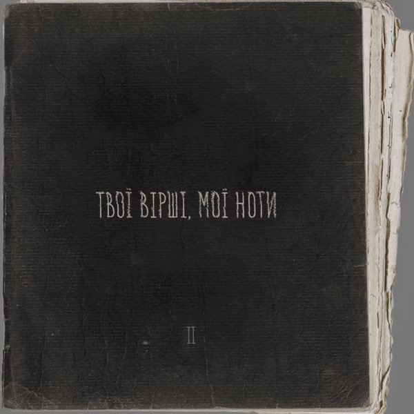

Моя Аудіотека: Улюблені Альбоми
Ця сторінка — моє особисте музичне святилище. Тут зібрані улюблені треки з альбомів, які вплинули на мій світогляд і допомагають жити. Я зібрав тут найкращі альбоми Travis Scott, Eminem та Артема Пивоварова.

Utopia
Travis Scott (2023)
1. HYAENA
Жанр: Hip-Hop / Psychedelic Rap
2. FE!N (feat. Playboi Carti)
Жанр: Trap / Rage
3. MY EYES (Улюблений)
Жанр: Alternative Hip-Hop / Ethereal

The Marshall Mathers LP
Eminem (2000)
1. The Real Slim Shady
Жанр: Hip-Hop / Rap
2. Stan (feat. Dido)
Жанр: Hip-Hop / Storytelling
3. The Way I Am (Улюблений)
Жанр: Hardcore Hip-Hop / Conscious

Твої Вірші, Мої Ноти 2
Артем Пивоваров (2023)
1. Кохання
Жанр: Pop / Electronic
2. Мова
Жанр: Pop / Folk
3. Серце (Улюблений)
Жанр: Pop / Alternative